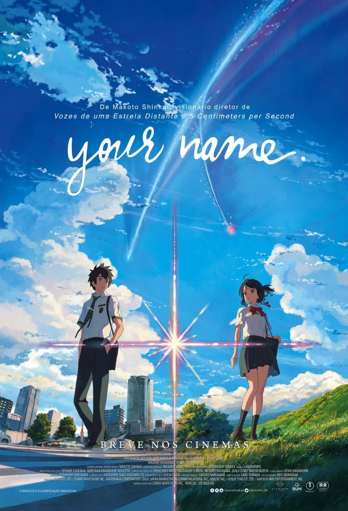

Engenharia de software
Data:30/10/2025
Aluno: Murilo Marques Moura
Professor: Peterson Albuquerque
Disciplina: Desenvolvimento Web
Catalogo de filmes
catalogo de filmes para recomendação e assistir com a família
Your name
Genero:Comedia,Romance
sinopse: Mitsuha é a filha do prefeito de uma pequena cidade, mas
sonha em tentar a sorte em Tóquio. Taki trabalha em um restaurante em
Tóquio e deseja largar o seu emprego. Os dois não se conhecem,
mas estão conectados pelas imagens de seus sonhos.

Batman o Cavaleiro das trevas
Genero:Ação,Aventura
sinopse: Batman tem conseguido manter a ordem em Gotham com a ajuda de
Jim Gordon e Harvey Dent. No entanto,
um jovem e anárquico criminoso, conhecido apenas como Coringa,
pretende testar o Cavaleiro das Trevas e mergulhar a cidade em um verdadeiro caos.

Gente Grande
Genero: Comédia,Aventura
sinopse: A morte do treinador de basquete de infância de velhos amigos reúne a
turma no mesmo lugar que celebraram um campeonato anos atrás. Os amigos,
acompanhados de suas esposas e filhos, descobrem que idade não significa o mesmo que maturidade.

De volta para o futuro
Genero: Ficção Científica,Aventura
sinopse: O adolescente Marty McFly é transportado para o ano de 1955 quando uma experiência
do excêntrico cientista Doc Brown é malsucedida. Marty viaja pelo tempo
em um carro modificado e acaba conhecendo seus pais ainda jovens.
O problema é que ele pode deixar de existir porque interferiu na rotina dos pais,
que correm o risco de não se apaixonarem mais.
Para complicar ainda mais a situação, Marty precisa voltar para casa a tempo de salvar o cientista.

Projeto Adam
Genero:Aventura,Ficção Cientifica
sinopse: Um viajante do tempo volta ao ano de 2022 por acidente e acaba se encontrando
com seu eu mais novo. Juntos, e sendo caçados por forças do futuro,
os dois embarcam em uma missão para consertar a linha temporal e salvar seus entes queridos.